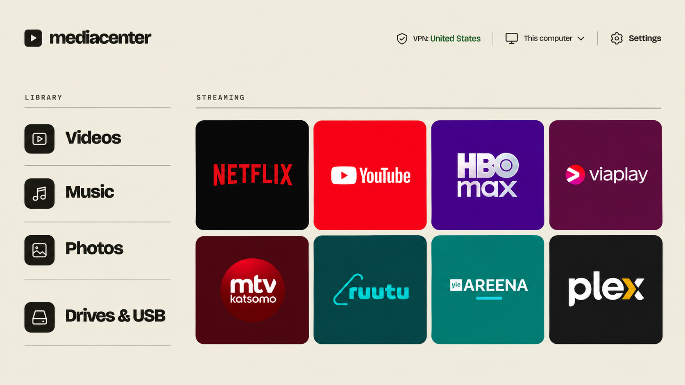
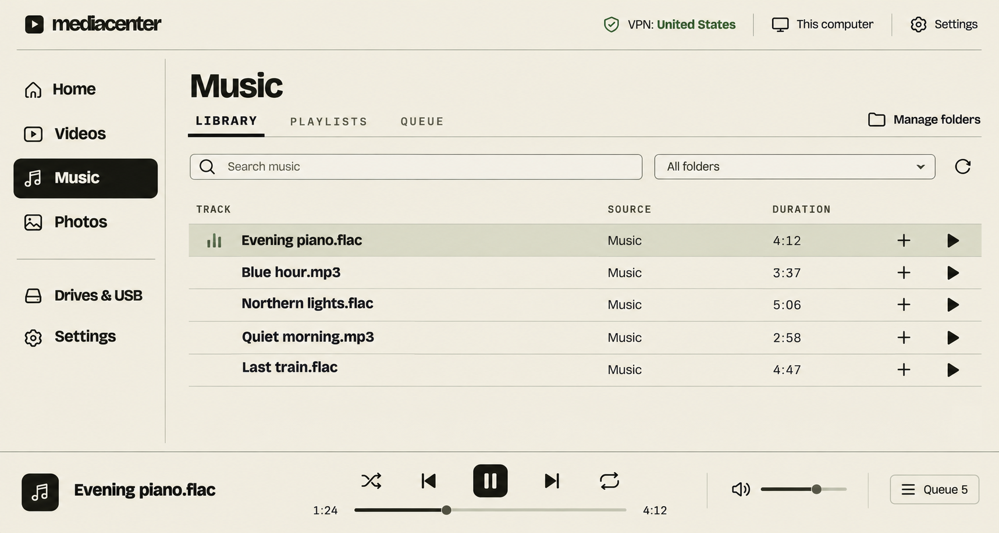
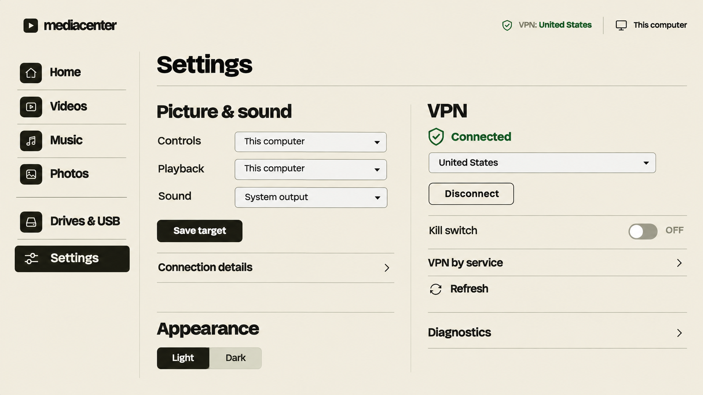
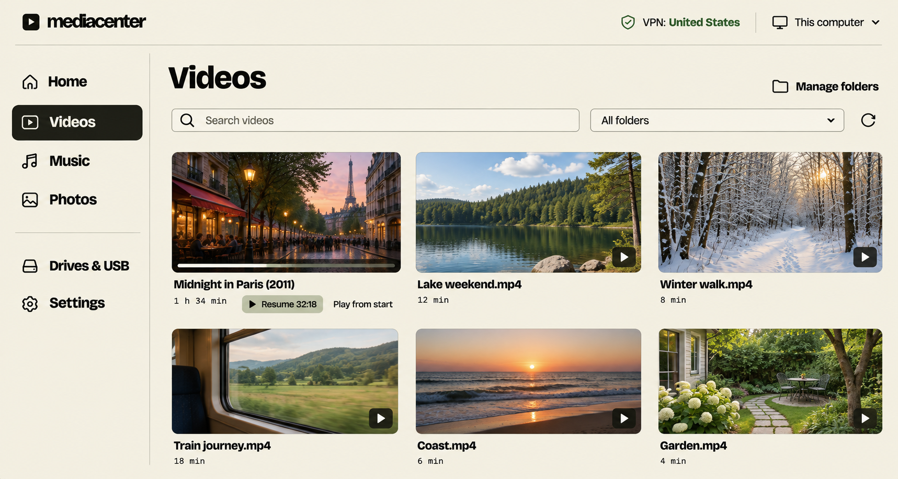
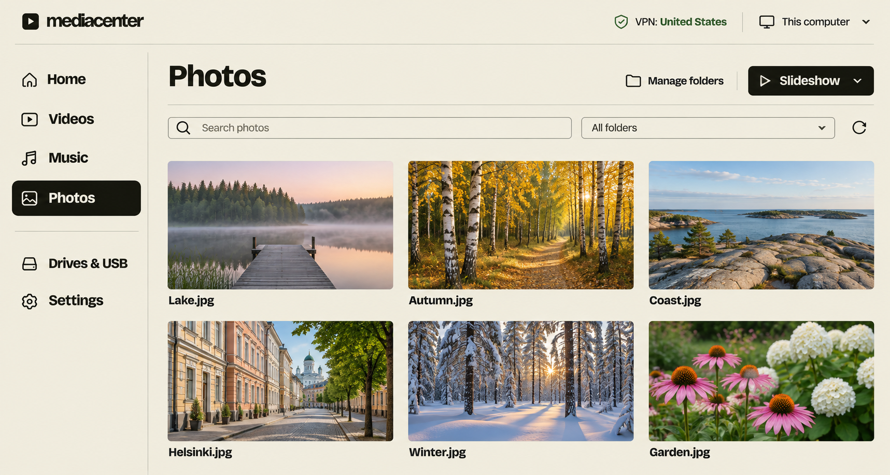
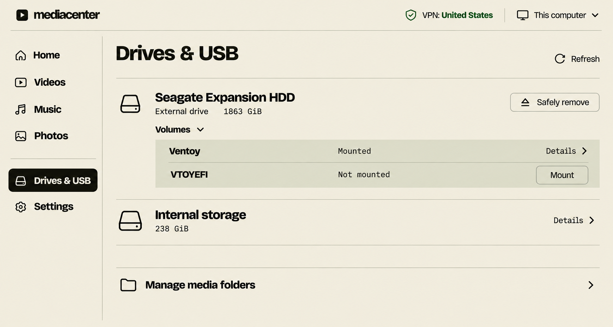

Mediacenter — selkeämpi käyttöliittymä
Kuusi luonnoskuvaa samasta suunnasta. Kuvat eivät ole toimivia sovellusnäkymiä. Mediasisältö on havainnollistavaa esimerkkiaineistoa.
1. Etusivu
2. Musiikki
3. Asetukset
4. Videos
5. Photos
6. Drives & USB